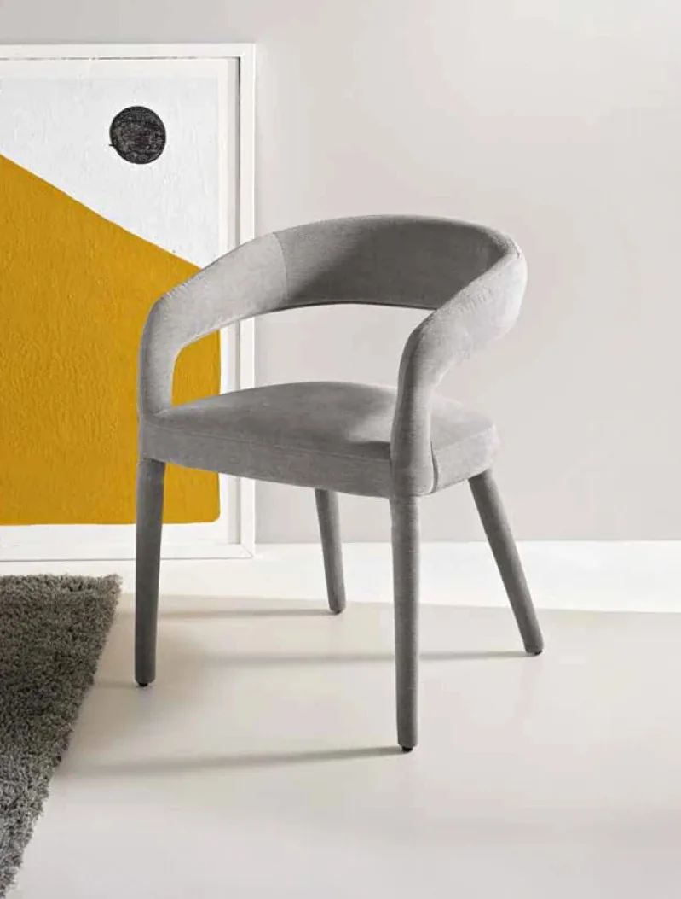
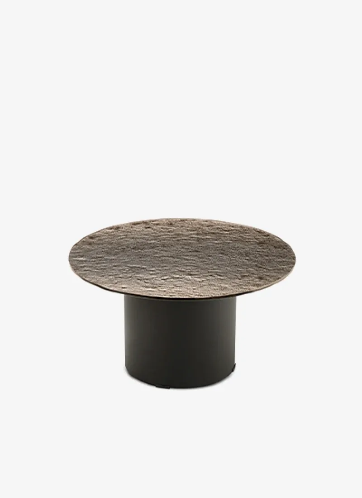
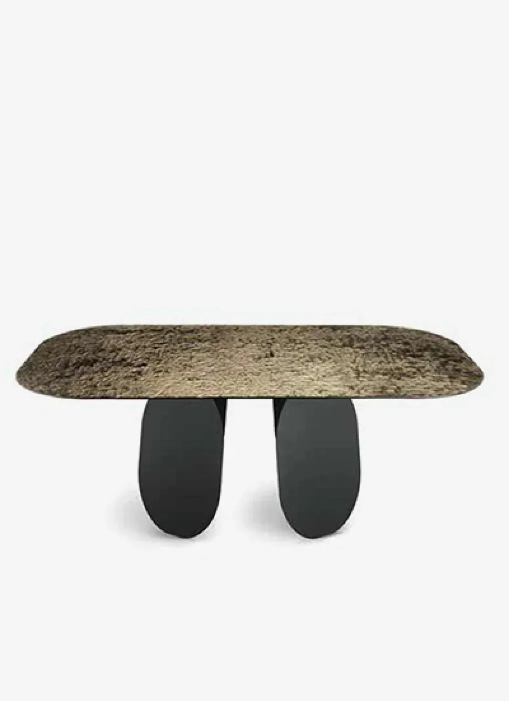
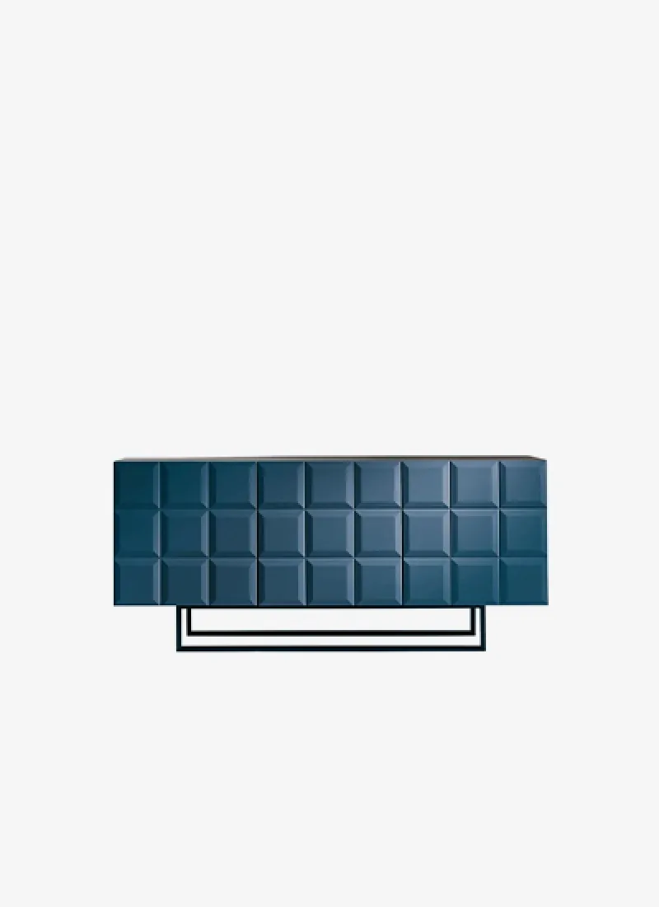
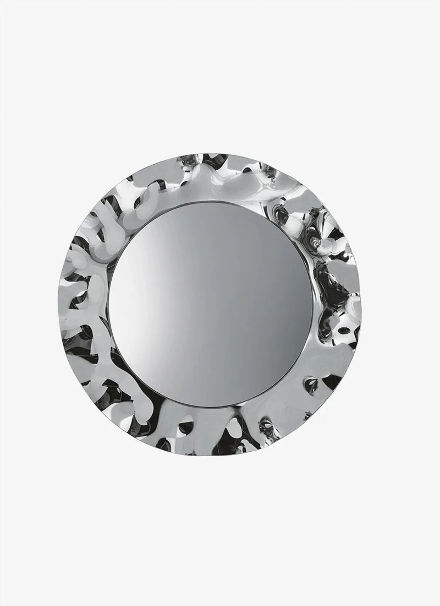
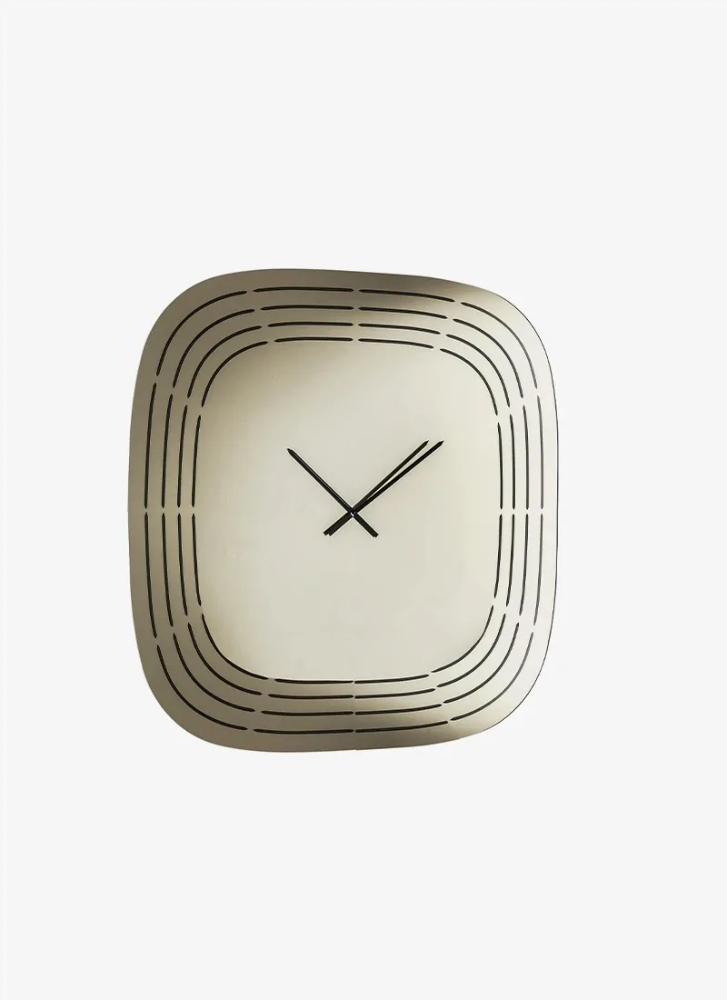
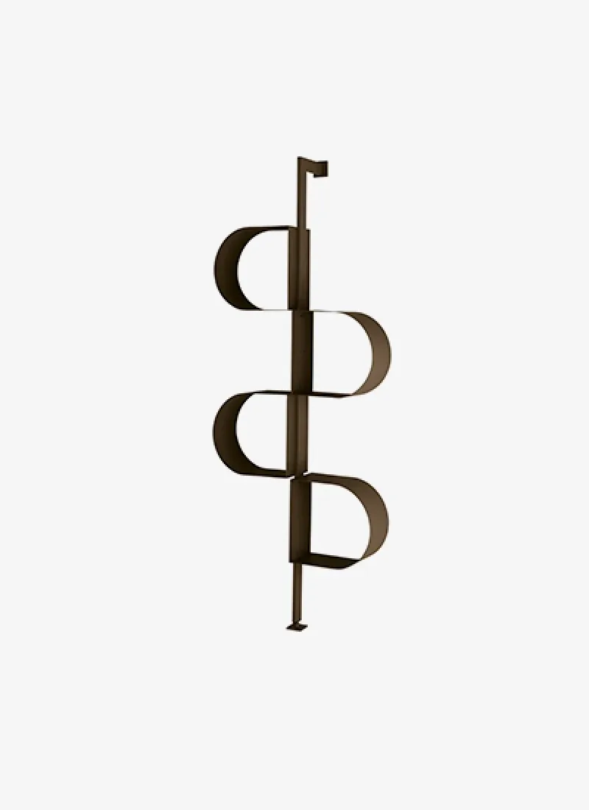

Le mobilier italien pour les espaces à vivre
Capodarte
« De la chaleur des Pouilles à vos maisons » : c’est ainsi que la marque se présente. Capodarte meuble les pièces où l’on se retrouve, de la table aux objets de décoration.
- Marque du Ciciriello Group
- Une partie au magasin, le reste sur catalogue
- Première visite et conseil offerts

La maison
Une histoire de famille, née à Andria.
Capodarte est une marque du Ciciriello Group. L’histoire commence dans les années 1980 à Andria, dans les Pouilles, quand Giovanni Ciciriello fonde l’entreprise ; la famille la dirige toujours. La collection réunit tables, chaises, fauteuils, canapés et accessoires, avec la volonté d’associer le style et la fonctionnalité.
Source : présentation de la marque sur son site officiel, lue le 16 novembre 2026.
Voir le site de Capodarte (nouvel onglet)Un aperçu de la collection
De la table à l’horloge.
Cinq pièces très différentes, pour donner une idée de l’univers. Une partie de la collection est au magasin ; le reste se choisit sur catalogue. Photos du fabricant.

Table Maya. 
Buffet Ofelia. Les portes s’ouvrent d’une pression. Deux exemples de largeur dans la collection, 120 et 240 cm, pour 50 cm de profondeur. 
Miroir Dance. Son cadre est en verre travaillé. Pour visualiser sa place au mur, tracez un cercle de 90, 120 ou 180 cm de diamètre. 
Horloge Horizon. Ses angles arrondis et ses lignes gravées au laser dessinent un carré en verre miroir, naturel ou bronze. 
Bibliothèque Tiffany.
Voir aussi
Autour de la table.
-
Toutes nos tables
Et les chaises qui vont avec.
Voir la salle à manger -
Buffets et dressoirs
Le rangement qui accompagne la table.
Voir les buffets
Venez voir Capodarte au magasin.
Une partie de la collection est exposée ; pour le reste, nous parcourons le catalogue avec vous et commandons la pièce choisie.
- Lundi
- 13h30 – 18h30
- Mardi au samedi
- 10h30 – 18h30
- Dimanche
- Fermé
- Téléphone
- 064 46 07 72
- Livraison
- Par nos soins, dans le Hainaut (Binche, La Louvière, Mons, Charleroi…) et la province de Namur
Nous livrons aussi dans le nord de la France. Ailleurs, dont Bruxelles : sur demande.